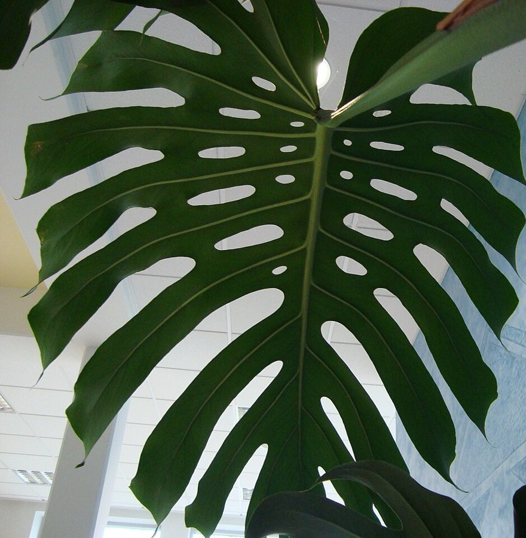

店のこと
確認できていること
- 店名は「CAFE Sugawara」、業種はカフェ
- 所在地は宮城県石巻市住吉町２丁目６−６(〒986-0821)
- 電話は0225-90-3856
- Instagramは @cafesugawara
- 営業時間・定休日・メニュー・価格・ご予約・駐車場は準備中
下の写真と文は制作側が想像して選んだもので、お店の実際の様子・メニューとは関係がありません。

想像してみる
器と、本と、ひと息
お店の中のことは分かりません。制作側は「カフェ」という言葉から、カップを手に取る、本を開く、といった小さな動作を連想しました(実際のお店の姿ではありません)。



琺瑯のカップの縁取りになぞらえた構成は、制作側の連想です。お店の理念・由来とは無関係です。